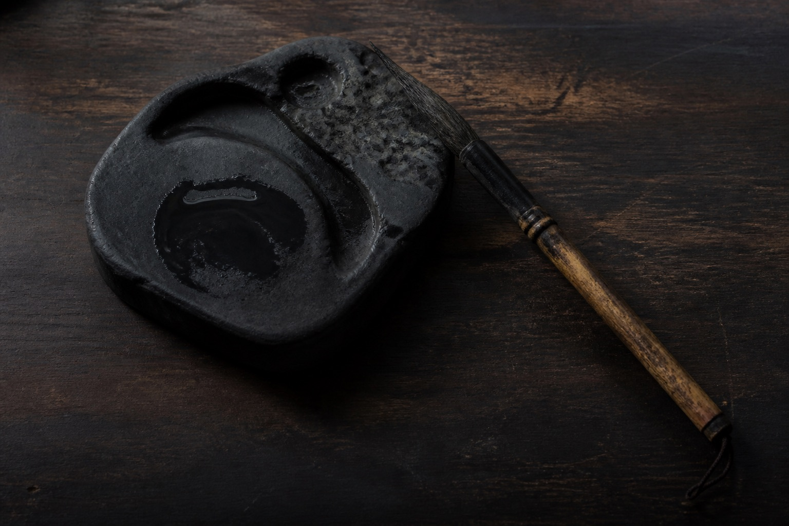

Basic information | |
| Also called | grave deed, dibie, underworld bond |
| Common check-items | time, qianzhu (payer), sizhi (four boundaries), zhongbao (guarantor), wangzhe (the deceased) |
| Contemporary counterparts | cemetery use certificate, cadastre notice |
A maidiquan (grave-land deed) is a title contract addressed to underworld deities. Catalogers check fields. They do not carve a new brick for anyone. This lemma lists check-items only. It does not supply a complete model text and does not teach vermilion order.
1 Check-items
Time: look at how it is written. Do not rush a conversion. Qianzhu is the person named as paying. Sizhi writes what east, west, south, and north meet. Zhongbao is the middle person. Old deeds often use a deity formula; some use a township clerk's real name. Wangzhe is the name the deed buries. It may not match an epitaph or a cemetery certificate. Mark the mismatch. Do not rewrite the lemma into “the correct one.”
2 Ganzhi
A deed that writes jiazi or yichou is sometimes formula, taking the start of a cycle. It does not always equal one Gregorian conversion. Anpu holdings include a case whose public layer is written 1983 and whose restricted layer still keeps jiazi. Duty staff should not change jiazi into a calendar date in a viewing note.
3 What not to do
Do not use this lemma to write a yin contract that curses the living. Do not treat a real deceased name on an excavated deed as a local puzzle answer. Do not advertise buying a yin house as a path to wealth. A price written as nine thousand nine hundred is usually formula. It cannot stand as a sale price.
